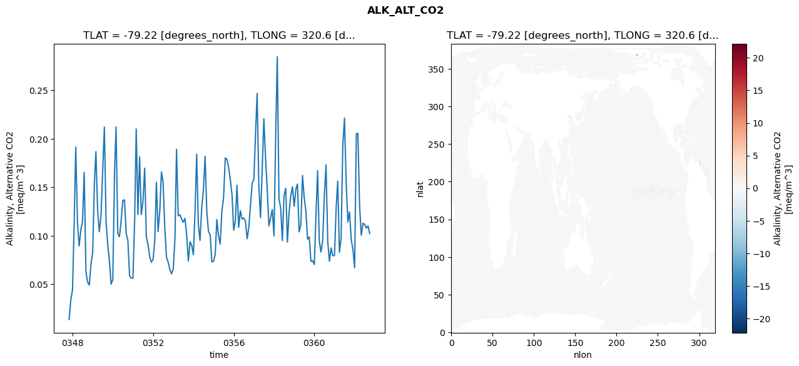
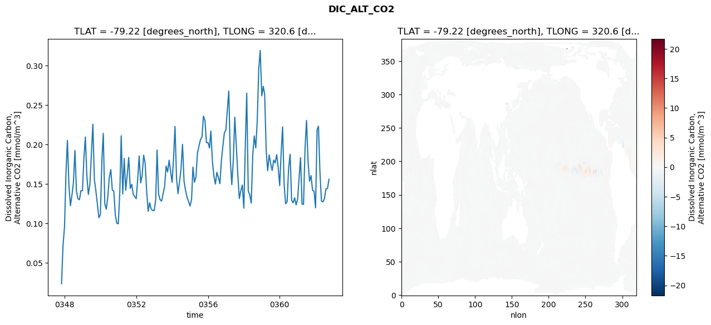
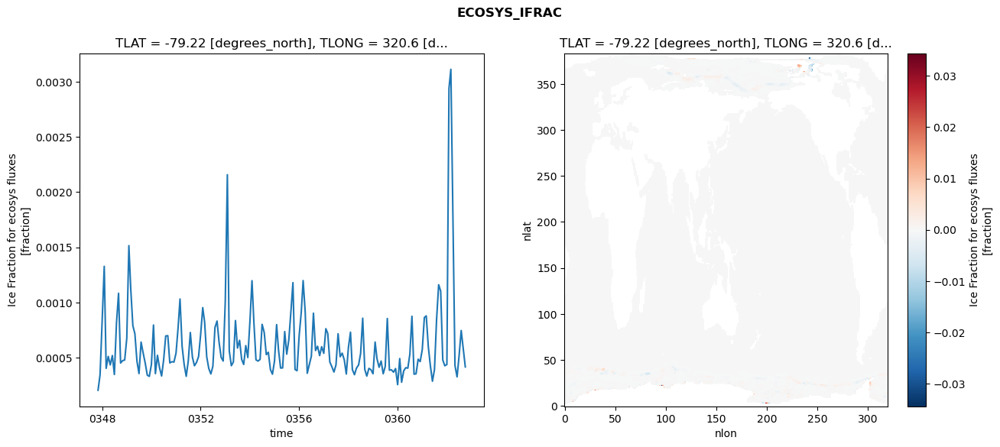
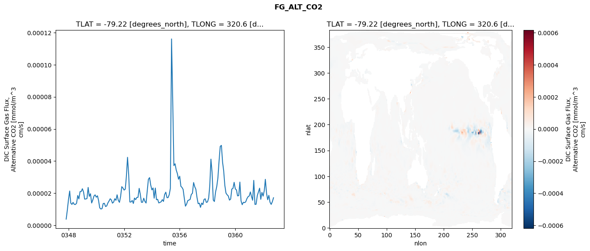

glb-dor_North_Atlantic_basin_021_1999-10-01_00087#
Simulation details#
Case: smyle.cdr-atlas-v0.glb-dor_North_Atlantic_basin_021_1999-10-01_00087.001
Basin: North_Atlantic_basin
Polygon: 21.0
Start date: 1999-10
Show code cell source Hide code cell source
import xarray as xr
import matplotlib.pyplot as plt
Show code cell source Hide code cell source
zarr_store = "/path/to/zarr/store"
# Parameters
zarr_store = "/global/cfs/projectdirs/m4746/Projects/Ocean-CDR-Atlas-v0/data/validation/smyle.cdr-atlas-v0.glb-dor_North_Atlantic_basin_021_1999-10-01_00087.001.validation.zarr"
Show code cell source Hide code cell source
%%time
ds_o = xr.open_zarr(zarr_store).compute()
ds_o
CPU times: user 651 ms, sys: 458 ms, total: 1.11 s
Wall time: 1.41 s
<xarray.Dataset> Size: 2MB
Dimensions: (nlat: 384, nlon: 320, time: 180)
Coordinates:
TLAT float64 8B -79.22
TLONG float64 8B 320.6
ULAT float64 8B -78.95
ULONG float64 8B 321.1
* time (time) object 1kB 0347-11-01 00:00:00 ... 0362-10-01 0...
z_t float32 4B 500.0
Dimensions without coordinates: nlat, nlon
Data variables:
ALK_ALT_CO2_diff (nlat, nlon) float32 492kB nan nan nan ... nan nan nan
ALK_ALT_CO2_rmse (time) float64 1kB 0.01368 0.03406 ... 0.1103 0.1023
DIC_ALT_CO2_diff (nlat, nlon) float32 492kB nan nan nan ... nan nan nan
DIC_ALT_CO2_rmse (time) float64 1kB 0.02361 0.0715 0.0957 ... 0.1442 0.156
ECOSYS_IFRAC_diff (nlat, nlon) float32 492kB nan nan nan ... nan nan nan
ECOSYS_IFRAC_rmse (time) float64 1kB 0.0002064 0.0003473 ... 0.0004173
FG_ALT_CO2_diff (nlat, nlon) float32 492kB nan nan nan ... nan nan nan
FG_ALT_CO2_rmse (time) float64 1kB 3.777e-06 9.358e-06 ... 1.711e-05xarray.Dataset
- nlat: 384
- nlon: 320
- time: 180
- TLAT()float64-79.22
- long_name :
- array of t-grid latitudes
- units :
- degrees_north
array(-79.22052261)
- TLONG()float64320.6
- long_name :
- array of t-grid longitudes
- units :
- degrees_east
array(320.56250892)
- ULAT()float64-78.95
- long_name :
- array of u-grid latitudes
- units :
- degrees_north
array(-78.95289509)
- ULONG()float64321.1
- long_name :
- array of u-grid longitudes
- units :
- degrees_east
array(321.12500894)
- time(time)object0347-11-01 00:00:00 ... 0362-10-...
- bounds :
- time_bound
- long_name :
- time
array([cftime.DatetimeNoLeap(347, 11, 1, 0, 0, 0, 0, has_year_zero=True), cftime.DatetimeNoLeap(347, 12, 1, 0, 0, 0, 0, has_year_zero=True), cftime.DatetimeNoLeap(348, 1, 1, 0, 0, 0, 0, has_year_zero=True), cftime.DatetimeNoLeap(348, 2, 1, 0, 0, 0, 0, has_year_zero=True), cftime.DatetimeNoLeap(348, 3, 1, 0, 0, 0, 0, has_year_zero=True), cftime.DatetimeNoLeap(348, 4, 1, 0, 0, 0, 0, has_year_zero=True), cftime.DatetimeNoLeap(348, 5, 1, 0, 0, 0, 0, has_year_zero=True), cftime.DatetimeNoLeap(348, 6, 1, 0, 0, 0, 0, has_year_zero=True), cftime.DatetimeNoLeap(348, 7, 1, 0, 0, 0, 0, has_year_zero=True), cftime.DatetimeNoLeap(348, 8, 1, 0, 0, 0, 0, has_year_zero=True), cftime.DatetimeNoLeap(348, 9, 1, 0, 0, 0, 0, has_year_zero=True), cftime.DatetimeNoLeap(348, 10, 1, 0, 0, 0, 0, has_year_zero=True), cftime.DatetimeNoLeap(348, 11, 1, 0, 0, 0, 0, has_year_zero=True), cftime.DatetimeNoLeap(348, 12, 1, 0, 0, 0, 0, has_year_zero=True), cftime.DatetimeNoLeap(349, 1, 1, 0, 0, 0, 0, has_year_zero=True), cftime.DatetimeNoLeap(349, 2, 1, 0, 0, 0, 0, has_year_zero=True), cftime.DatetimeNoLeap(349, 3, 1, 0, 0, 0, 0, has_year_zero=True), cftime.DatetimeNoLeap(349, 4, 1, 0, 0, 0, 0, has_year_zero=True), cftime.DatetimeNoLeap(349, 5, 1, 0, 0, 0, 0, has_year_zero=True), cftime.DatetimeNoLeap(349, 6, 1, 0, 0, 0, 0, has_year_zero=True), cftime.DatetimeNoLeap(349, 7, 1, 0, 0, 0, 0, has_year_zero=True), cftime.DatetimeNoLeap(349, 8, 1, 0, 0, 0, 0, has_year_zero=True), cftime.DatetimeNoLeap(349, 9, 1, 0, 0, 0, 0, has_year_zero=True), cftime.DatetimeNoLeap(349, 10, 1, 0, 0, 0, 0, has_year_zero=True), cftime.DatetimeNoLeap(349, 11, 1, 0, 0, 0, 0, has_year_zero=True), cftime.DatetimeNoLeap(349, 12, 1, 0, 0, 0, 0, has_year_zero=True), cftime.DatetimeNoLeap(350, 1, 1, 0, 0, 0, 0, has_year_zero=True), cftime.DatetimeNoLeap(350, 2, 1, 0, 0, 0, 0, has_year_zero=True), cftime.DatetimeNoLeap(350, 3, 1, 0, 0, 0, 0, has_year_zero=True), cftime.DatetimeNoLeap(350, 4, 1, 0, 0, 0, 0, has_year_zero=True), cftime.DatetimeNoLeap(350, 5, 1, 0, 0, 0, 0, has_year_zero=True), cftime.DatetimeNoLeap(350, 6, 1, 0, 0, 0, 0, has_year_zero=True), cftime.DatetimeNoLeap(350, 7, 1, 0, 0, 0, 0, has_year_zero=True), cftime.DatetimeNoLeap(350, 8, 1, 0, 0, 0, 0, has_year_zero=True), cftime.DatetimeNoLeap(350, 9, 1, 0, 0, 0, 0, has_year_zero=True), cftime.DatetimeNoLeap(350, 10, 1, 0, 0, 0, 0, has_year_zero=True), cftime.DatetimeNoLeap(350, 11, 1, 0, 0, 0, 0, has_year_zero=True), cftime.DatetimeNoLeap(350, 12, 1, 0, 0, 0, 0, has_year_zero=True), cftime.DatetimeNoLeap(351, 1, 1, 0, 0, 0, 0, has_year_zero=True), cftime.DatetimeNoLeap(351, 2, 1, 0, 0, 0, 0, has_year_zero=True), cftime.DatetimeNoLeap(351, 3, 1, 0, 0, 0, 0, has_year_zero=True), cftime.DatetimeNoLeap(351, 4, 1, 0, 0, 0, 0, has_year_zero=True), cftime.DatetimeNoLeap(351, 5, 1, 0, 0, 0, 0, has_year_zero=True), cftime.DatetimeNoLeap(351, 6, 1, 0, 0, 0, 0, has_year_zero=True), cftime.DatetimeNoLeap(351, 7, 1, 0, 0, 0, 0, has_year_zero=True), cftime.DatetimeNoLeap(351, 8, 1, 0, 0, 0, 0, has_year_zero=True), cftime.DatetimeNoLeap(351, 9, 1, 0, 0, 0, 0, has_year_zero=True), cftime.DatetimeNoLeap(351, 10, 1, 0, 0, 0, 0, has_year_zero=True), cftime.DatetimeNoLeap(351, 11, 1, 0, 0, 0, 0, has_year_zero=True), cftime.DatetimeNoLeap(351, 12, 1, 0, 0, 0, 0, has_year_zero=True), cftime.DatetimeNoLeap(352, 1, 1, 0, 0, 0, 0, has_year_zero=True), cftime.DatetimeNoLeap(352, 2, 1, 0, 0, 0, 0, has_year_zero=True), cftime.DatetimeNoLeap(352, 3, 1, 0, 0, 0, 0, has_year_zero=True), cftime.DatetimeNoLeap(352, 4, 1, 0, 0, 0, 0, has_year_zero=True), cftime.DatetimeNoLeap(352, 5, 1, 0, 0, 0, 0, has_year_zero=True), cftime.DatetimeNoLeap(352, 6, 1, 0, 0, 0, 0, has_year_zero=True), cftime.DatetimeNoLeap(352, 7, 1, 0, 0, 0, 0, has_year_zero=True), cftime.DatetimeNoLeap(352, 8, 1, 0, 0, 0, 0, has_year_zero=True), cftime.DatetimeNoLeap(352, 9, 1, 0, 0, 0, 0, has_year_zero=True), cftime.DatetimeNoLeap(352, 10, 1, 0, 0, 0, 0, has_year_zero=True), cftime.DatetimeNoLeap(352, 11, 1, 0, 0, 0, 0, has_year_zero=True), cftime.DatetimeNoLeap(352, 12, 1, 0, 0, 0, 0, has_year_zero=True), cftime.DatetimeNoLeap(353, 1, 1, 0, 0, 0, 0, has_year_zero=True), cftime.DatetimeNoLeap(353, 2, 1, 0, 0, 0, 0, has_year_zero=True), cftime.DatetimeNoLeap(353, 3, 1, 0, 0, 0, 0, has_year_zero=True), cftime.DatetimeNoLeap(353, 4, 1, 0, 0, 0, 0, has_year_zero=True), cftime.DatetimeNoLeap(353, 5, 1, 0, 0, 0, 0, has_year_zero=True), cftime.DatetimeNoLeap(353, 6, 1, 0, 0, 0, 0, has_year_zero=True), cftime.DatetimeNoLeap(353, 7, 1, 0, 0, 0, 0, has_year_zero=True), cftime.DatetimeNoLeap(353, 8, 1, 0, 0, 0, 0, has_year_zero=True), cftime.DatetimeNoLeap(353, 9, 1, 0, 0, 0, 0, has_year_zero=True), cftime.DatetimeNoLeap(353, 10, 1, 0, 0, 0, 0, has_year_zero=True), cftime.DatetimeNoLeap(353, 11, 1, 0, 0, 0, 0, has_year_zero=True), cftime.DatetimeNoLeap(353, 12, 1, 0, 0, 0, 0, has_year_zero=True), cftime.DatetimeNoLeap(354, 1, 1, 0, 0, 0, 0, has_year_zero=True), cftime.DatetimeNoLeap(354, 2, 1, 0, 0, 0, 0, has_year_zero=True), cftime.DatetimeNoLeap(354, 3, 1, 0, 0, 0, 0, has_year_zero=True), cftime.DatetimeNoLeap(354, 4, 1, 0, 0, 0, 0, has_year_zero=True), cftime.DatetimeNoLeap(354, 5, 1, 0, 0, 0, 0, has_year_zero=True), cftime.DatetimeNoLeap(354, 6, 1, 0, 0, 0, 0, has_year_zero=True), cftime.DatetimeNoLeap(354, 7, 1, 0, 0, 0, 0, has_year_zero=True), cftime.DatetimeNoLeap(354, 8, 1, 0, 0, 0, 0, has_year_zero=True), cftime.DatetimeNoLeap(354, 9, 1, 0, 0, 0, 0, has_year_zero=True), cftime.DatetimeNoLeap(354, 10, 1, 0, 0, 0, 0, has_year_zero=True), cftime.DatetimeNoLeap(354, 11, 1, 0, 0, 0, 0, has_year_zero=True), cftime.DatetimeNoLeap(354, 12, 1, 0, 0, 0, 0, has_year_zero=True), cftime.DatetimeNoLeap(355, 1, 1, 0, 0, 0, 0, has_year_zero=True), cftime.DatetimeNoLeap(355, 2, 1, 0, 0, 0, 0, has_year_zero=True), cftime.DatetimeNoLeap(355, 3, 1, 0, 0, 0, 0, has_year_zero=True), cftime.DatetimeNoLeap(355, 4, 1, 0, 0, 0, 0, has_year_zero=True), cftime.DatetimeNoLeap(355, 5, 1, 0, 0, 0, 0, has_year_zero=True), cftime.DatetimeNoLeap(355, 6, 1, 0, 0, 0, 0, has_year_zero=True), cftime.DatetimeNoLeap(355, 7, 1, 0, 0, 0, 0, has_year_zero=True), cftime.DatetimeNoLeap(355, 8, 1, 0, 0, 0, 0, has_year_zero=True), cftime.DatetimeNoLeap(355, 9, 1, 0, 0, 0, 0, has_year_zero=True), cftime.DatetimeNoLeap(355, 10, 1, 0, 0, 0, 0, has_year_zero=True), cftime.DatetimeNoLeap(355, 11, 1, 0, 0, 0, 0, has_year_zero=True), cftime.DatetimeNoLeap(355, 12, 1, 0, 0, 0, 0, has_year_zero=True), cftime.DatetimeNoLeap(356, 1, 1, 0, 0, 0, 0, has_year_zero=True), cftime.DatetimeNoLeap(356, 2, 1, 0, 0, 0, 0, has_year_zero=True), cftime.DatetimeNoLeap(356, 3, 1, 0, 0, 0, 0, has_year_zero=True), cftime.DatetimeNoLeap(356, 4, 1, 0, 0, 0, 0, has_year_zero=True), cftime.DatetimeNoLeap(356, 5, 1, 0, 0, 0, 0, has_year_zero=True), cftime.DatetimeNoLeap(356, 6, 1, 0, 0, 0, 0, has_year_zero=True), cftime.DatetimeNoLeap(356, 7, 1, 0, 0, 0, 0, has_year_zero=True), cftime.DatetimeNoLeap(356, 8, 1, 0, 0, 0, 0, has_year_zero=True), cftime.DatetimeNoLeap(356, 9, 1, 0, 0, 0, 0, has_year_zero=True), cftime.DatetimeNoLeap(356, 10, 1, 0, 0, 0, 0, has_year_zero=True), cftime.DatetimeNoLeap(356, 11, 1, 0, 0, 0, 0, has_year_zero=True), cftime.DatetimeNoLeap(356, 12, 1, 0, 0, 0, 0, has_year_zero=True), cftime.DatetimeNoLeap(357, 1, 1, 0, 0, 0, 0, has_year_zero=True), cftime.DatetimeNoLeap(357, 2, 1, 0, 0, 0, 0, has_year_zero=True), cftime.DatetimeNoLeap(357, 3, 1, 0, 0, 0, 0, has_year_zero=True), cftime.DatetimeNoLeap(357, 4, 1, 0, 0, 0, 0, has_year_zero=True), cftime.DatetimeNoLeap(357, 5, 1, 0, 0, 0, 0, has_year_zero=True), cftime.DatetimeNoLeap(357, 6, 1, 0, 0, 0, 0, has_year_zero=True), cftime.DatetimeNoLeap(357, 7, 1, 0, 0, 0, 0, has_year_zero=True), cftime.DatetimeNoLeap(357, 8, 1, 0, 0, 0, 0, has_year_zero=True), cftime.DatetimeNoLeap(357, 9, 1, 0, 0, 0, 0, has_year_zero=True), cftime.DatetimeNoLeap(357, 10, 1, 0, 0, 0, 0, has_year_zero=True), cftime.DatetimeNoLeap(357, 11, 1, 0, 0, 0, 0, has_year_zero=True), cftime.DatetimeNoLeap(357, 12, 1, 0, 0, 0, 0, has_year_zero=True), cftime.DatetimeNoLeap(358, 1, 1, 0, 0, 0, 0, has_year_zero=True), cftime.DatetimeNoLeap(358, 2, 1, 0, 0, 0, 0, has_year_zero=True), cftime.DatetimeNoLeap(358, 3, 1, 0, 0, 0, 0, has_year_zero=True), cftime.DatetimeNoLeap(358, 4, 1, 0, 0, 0, 0, has_year_zero=True), cftime.DatetimeNoLeap(358, 5, 1, 0, 0, 0, 0, has_year_zero=True), cftime.DatetimeNoLeap(358, 6, 1, 0, 0, 0, 0, has_year_zero=True), cftime.DatetimeNoLeap(358, 7, 1, 0, 0, 0, 0, has_year_zero=True), cftime.DatetimeNoLeap(358, 8, 1, 0, 0, 0, 0, has_year_zero=True), cftime.DatetimeNoLeap(358, 9, 1, 0, 0, 0, 0, has_year_zero=True), cftime.DatetimeNoLeap(358, 10, 1, 0, 0, 0, 0, has_year_zero=True), cftime.DatetimeNoLeap(358, 11, 1, 0, 0, 0, 0, has_year_zero=True), cftime.DatetimeNoLeap(358, 12, 1, 0, 0, 0, 0, has_year_zero=True), cftime.DatetimeNoLeap(359, 1, 1, 0, 0, 0, 0, has_year_zero=True), cftime.DatetimeNoLeap(359, 2, 1, 0, 0, 0, 0, has_year_zero=True), cftime.DatetimeNoLeap(359, 3, 1, 0, 0, 0, 0, has_year_zero=True), cftime.DatetimeNoLeap(359, 4, 1, 0, 0, 0, 0, has_year_zero=True), cftime.DatetimeNoLeap(359, 5, 1, 0, 0, 0, 0, has_year_zero=True), cftime.DatetimeNoLeap(359, 6, 1, 0, 0, 0, 0, has_year_zero=True), cftime.DatetimeNoLeap(359, 7, 1, 0, 0, 0, 0, has_year_zero=True), cftime.DatetimeNoLeap(359, 8, 1, 0, 0, 0, 0, has_year_zero=True), cftime.DatetimeNoLeap(359, 9, 1, 0, 0, 0, 0, has_year_zero=True), cftime.DatetimeNoLeap(359, 10, 1, 0, 0, 0, 0, has_year_zero=True), cftime.DatetimeNoLeap(359, 11, 1, 0, 0, 0, 0, has_year_zero=True), cftime.DatetimeNoLeap(359, 12, 1, 0, 0, 0, 0, has_year_zero=True), cftime.DatetimeNoLeap(360, 1, 1, 0, 0, 0, 0, has_year_zero=True), cftime.DatetimeNoLeap(360, 2, 1, 0, 0, 0, 0, has_year_zero=True), cftime.DatetimeNoLeap(360, 3, 1, 0, 0, 0, 0, has_year_zero=True), cftime.DatetimeNoLeap(360, 4, 1, 0, 0, 0, 0, has_year_zero=True), cftime.DatetimeNoLeap(360, 5, 1, 0, 0, 0, 0, has_year_zero=True), cftime.DatetimeNoLeap(360, 6, 1, 0, 0, 0, 0, has_year_zero=True), cftime.DatetimeNoLeap(360, 7, 1, 0, 0, 0, 0, has_year_zero=True), cftime.DatetimeNoLeap(360, 8, 1, 0, 0, 0, 0, has_year_zero=True), cftime.DatetimeNoLeap(360, 9, 1, 0, 0, 0, 0, has_year_zero=True), cftime.DatetimeNoLeap(360, 10, 1, 0, 0, 0, 0, has_year_zero=True), cftime.DatetimeNoLeap(360, 11, 1, 0, 0, 0, 0, has_year_zero=True), cftime.DatetimeNoLeap(360, 12, 1, 0, 0, 0, 0, has_year_zero=True), cftime.DatetimeNoLeap(361, 1, 1, 0, 0, 0, 0, has_year_zero=True), cftime.DatetimeNoLeap(361, 2, 1, 0, 0, 0, 0, has_year_zero=True), cftime.DatetimeNoLeap(361, 3, 1, 0, 0, 0, 0, has_year_zero=True), cftime.DatetimeNoLeap(361, 4, 1, 0, 0, 0, 0, has_year_zero=True), cftime.DatetimeNoLeap(361, 5, 1, 0, 0, 0, 0, has_year_zero=True), cftime.DatetimeNoLeap(361, 6, 1, 0, 0, 0, 0, has_year_zero=True), cftime.DatetimeNoLeap(361, 7, 1, 0, 0, 0, 0, has_year_zero=True), cftime.DatetimeNoLeap(361, 8, 1, 0, 0, 0, 0, has_year_zero=True), cftime.DatetimeNoLeap(361, 9, 1, 0, 0, 0, 0, has_year_zero=True), cftime.DatetimeNoLeap(361, 10, 1, 0, 0, 0, 0, has_year_zero=True), cftime.DatetimeNoLeap(361, 11, 1, 0, 0, 0, 0, has_year_zero=True), cftime.DatetimeNoLeap(361, 12, 1, 0, 0, 0, 0, has_year_zero=True), cftime.DatetimeNoLeap(362, 1, 1, 0, 0, 0, 0, has_year_zero=True), cftime.DatetimeNoLeap(362, 2, 1, 0, 0, 0, 0, has_year_zero=True), cftime.DatetimeNoLeap(362, 3, 1, 0, 0, 0, 0, has_year_zero=True), cftime.DatetimeNoLeap(362, 4, 1, 0, 0, 0, 0, has_year_zero=True), cftime.DatetimeNoLeap(362, 5, 1, 0, 0, 0, 0, has_year_zero=True), cftime.DatetimeNoLeap(362, 6, 1, 0, 0, 0, 0, has_year_zero=True), cftime.DatetimeNoLeap(362, 7, 1, 0, 0, 0, 0, has_year_zero=True), cftime.DatetimeNoLeap(362, 8, 1, 0, 0, 0, 0, has_year_zero=True), cftime.DatetimeNoLeap(362, 9, 1, 0, 0, 0, 0, has_year_zero=True), cftime.DatetimeNoLeap(362, 10, 1, 0, 0, 0, 0, has_year_zero=True)], dtype=object) - z_t()float32500.0
- long_name :
- depth from surface to midpoint of layer
- positive :
- down
- units :
- centimeters
- valid_max :
- 537500.0
- valid_min :
- 500.0
array(500., dtype=float32)
- ALK_ALT_CO2_diff(nlat, nlon)float32nan nan nan nan ... nan nan nan nan
- cell_methods :
- time: mean
- grid_loc :
- 3111
- long_name :
- Alkalinity, Alternative CO2
- units :
- meq/m^3
array([[ nan, nan, nan, ..., nan, nan, nan], [ nan, nan, nan, ..., nan, nan, nan], [0.02392578, 0.05029297, 0.01245117, ..., nan, nan, nan], ..., [ nan, nan, nan, ..., nan, nan, nan], [ nan, nan, nan, ..., nan, nan, nan], [ nan, nan, nan, ..., nan, nan, nan]], dtype=float32) - ALK_ALT_CO2_rmse(time)float640.01368 0.03406 ... 0.1103 0.1023
- cell_methods :
- time: mean
- grid_loc :
- 3111
- long_name :
- Alkalinity, Alternative CO2
- units :
- meq/m^3
array([0.01368214, 0.0340623 , 0.04421525, 0.11458748, 0.19149068, 0.11365182, 0.08957709, 0.1059975 , 0.11472843, 0.16524721, 0.06307237, 0.05239171, 0.04912041, 0.07030049, 0.08288233, 0.15313516, 0.18678606, 0.12631377, 0.10420299, 0.1207019 , 0.16550513, 0.21210804, 0.11460486, 0.09115696, 0.07407845, 0.05006836, 0.0548871 , 0.16396514, 0.2121527 , 0.10242491, 0.09900686, 0.11544319, 0.13633244, 0.13701878, 0.10212411, 0.09528071, 0.05869216, 0.05638458, 0.05625174, 0.1168404 , 0.21007147, 0.12195243, 0.18140899, 0.12192972, 0.13537983, 0.16974494, 0.09857306, 0.09115614, 0.07789717, 0.07285123, 0.07575063, 0.09583778, 0.15503727, 0.10432212, 0.12460642, 0.16570611, 0.15514453, 0.10738236, 0.07770668, 0.07284942, 0.06499298, 0.06085179, 0.06606095, 0.09732248, 0.18909265, 0.12060687, 0.12165495, 0.11724508, 0.11406964, 0.11788501, 0.10071449, 0.07404174, 0.0938979 , 0.0901722 , 0.08049768, 0.12801497, 0.18421234, 0.11104182, 0.09522831, 0.12945511, 0.14725241, 0.18191692, 0.12419659, 0.10438954, 0.100891 , 0.0730886 , 0.07381526, 0.08117047, 0.11674346, 0.09980079, 0.09140446, 0.12611584, 0.13873129, 0.18030938, 0.17868953, 0.17042872, 0.15758541, 0.14227297, 0.10580228, 0.11594657, 0.15220456, 0.10861417, 0.12591585, 0.11726992, 0.11833568, 0.11528289, 0.09699093, 0.10827637, 0.13198635, 0.15393737, 0.15844289, 0.20641076, 0.24668781, 0.15155092, 0.1187374 , 0.16787304, 0.22077712, 0.17957145, 0.14706899, 0.11012253, 0.11890774, 0.12696522, 0.09985346, 0.20607982, 0.28455512, 0.13790627, 0.12918761, 0.09502826, 0.1412677 , 0.14898517, 0.09333949, 0.12439065, 0.141288 , 0.15059319, 0.13042502, 0.14812002, 0.15334506, 0.10405133, 0.11079161, 0.1621902 , 0.1395799 , 0.12579072, 0.09648112, 0.09885356, 0.07368941, 0.07436304, 0.07044671, 0.12289966, 0.16715428, 0.09470248, 0.08330621, 0.09473494, 0.14026359, 0.17315123, 0.0940822 , 0.07383083, 0.08750661, 0.07953996, 0.07958061, 0.12942342, 0.15637915, 0.08301654, 0.09750043, 0.19338974, 0.22133616, 0.15489457, 0.11429566, 0.12459335, 0.09572647, 0.08623638, 0.06697627, 0.20507448, 0.20557373, 0.13112035, 0.10059847, 0.11303695, 0.11158208, 0.10787888, 0.110254 , 0.10231965]) - DIC_ALT_CO2_diff(nlat, nlon)float32nan nan nan nan ... nan nan nan nan
- cell_methods :
- time: mean
- grid_loc :
- 3111
- long_name :
- Dissolved Inorganic Carbon, Alternative CO2
- units :
- mmol/m^3
array([[ nan, nan, nan, ..., nan, nan, nan], [ nan, nan, nan, ..., nan, nan, nan], [ 0.00195312, 0.03173828, -0.00585938, ..., nan, nan, nan], ..., [ nan, nan, nan, ..., nan, nan, nan], [ nan, nan, nan, ..., nan, nan, nan], [ nan, nan, nan, ..., nan, nan, nan]], dtype=float32) - DIC_ALT_CO2_rmse(time)float640.02361 0.0715 ... 0.1442 0.156
- cell_methods :
- time: mean
- grid_loc :
- 3111
- long_name :
- Dissolved Inorganic Carbon, Alternative CO2
- units :
- mmol/m^3
array([0.02361293, 0.07149901, 0.09570378, 0.16651798, 0.20516546, 0.14796966, 0.12249739, 0.1356234 , 0.15137427, 0.19239622, 0.14066285, 0.13111155, 0.12999038, 0.14147204, 0.14140307, 0.18431454, 0.20925962, 0.16001059, 0.13665042, 0.14906374, 0.18640567, 0.22562174, 0.15556335, 0.14121125, 0.12449843, 0.10715961, 0.11116743, 0.18100633, 0.21400732, 0.12468892, 0.11804003, 0.13339109, 0.15799203, 0.16808701, 0.14220995, 0.14092437, 0.11085958, 0.10018887, 0.09954336, 0.1405971 , 0.21097425, 0.13721538, 0.18223368, 0.14197877, 0.16109308, 0.18355242, 0.14433409, 0.14948814, 0.13664608, 0.13410645, 0.1313604 , 0.1572546 , 0.18548969, 0.15135045, 0.16052479, 0.18628483, 0.17631862, 0.14106762, 0.11524232, 0.12613454, 0.11826278, 0.11638696, 0.11621255, 0.12975704, 0.19286679, 0.13723227, 0.12993859, 0.12833696, 0.13744707, 0.14663906, 0.17269137, 0.16504372, 0.18000014, 0.1659096 , 0.15204258, 0.18489694, 0.22282473, 0.15706611, 0.13770296, 0.15274307, 0.1687643 , 0.20012562, 0.15305935, 0.14204926, 0.13310849, 0.12816484, 0.12202763, 0.13023013, 0.17133249, 0.15211425, 0.15857924, 0.18895072, 0.19796565, 0.20591112, 0.20952972, 0.23587734, 0.23010116, 0.20212391, 0.20249381, 0.19536696, 0.21700392, 0.1786196 , 0.16035645, 0.14981007, 0.16468398, 0.15827227, 0.15026591, 0.17956601, 0.19821213, 0.2148027 , 0.21830002, 0.24562659, 0.26763127, 0.17984847, 0.14908555, 0.18054549, 0.23442024, 0.19825494, 0.16112372, 0.13143984, 0.14151852, 0.14855646, 0.11922511, 0.20129104, 0.26503237, 0.14129769, 0.13616209, 0.12570094, 0.18638046, 0.21074569, 0.19550188, 0.23033323, 0.29627354, 0.31903309, 0.26153827, 0.27351916, 0.26301266, 0.19235537, 0.16671785, 0.18672302, 0.17564367, 0.16709701, 0.18016293, 0.17657946, 0.18705771, 0.17111169, 0.14774577, 0.19123483, 0.22227445, 0.14922144, 0.12486903, 0.12752464, 0.16946325, 0.18757932, 0.12952277, 0.12593655, 0.13242427, 0.12335939, 0.13077367, 0.15915796, 0.1832637 , 0.12423895, 0.12429746, 0.19554516, 0.23041022, 0.1781211 , 0.1533739 , 0.1604624 , 0.14176202, 0.14104346, 0.11964913, 0.21831474, 0.2231467 , 0.16372491, 0.12843544, 0.12723334, 0.13158814, 0.14378046, 0.14418241, 0.15602681]) - ECOSYS_IFRAC_diff(nlat, nlon)float32nan nan nan nan ... nan nan nan nan
- cell_methods :
- time: mean
- grid_loc :
- 2110
- long_name :
- Ice Fraction for ecosys fluxes
- units :
- fraction
array([[ nan, nan, nan, ..., nan, nan, nan], [ nan, nan, nan, ..., nan, nan, nan], [2.8014183e-06, 4.2915344e-06, 1.3411045e-05, ..., nan, nan, nan], ..., [ nan, nan, nan, ..., nan, nan, nan], [ nan, nan, nan, ..., nan, nan, nan], [ nan, nan, nan, ..., nan, nan, nan]], dtype=float32) - ECOSYS_IFRAC_rmse(time)float640.0002064 0.0003473 ... 0.0004173
- cell_methods :
- time: mean
- grid_loc :
- 2110
- long_name :
- Ice Fraction for ecosys fluxes
- units :
- fraction
array([0.00020636, 0.00034725, 0.00083101, 0.00132814, 0.00040482, 0.00051233, 0.00043582, 0.00052039, 0.00034887, 0.00081208, 0.00108436, 0.00045284, 0.00047463, 0.00048032, 0.00067731, 0.00151548, 0.00112187, 0.00079039, 0.00071829, 0.0004686 , 0.00035729, 0.00064215, 0.00054207, 0.00045277, 0.00034275, 0.00033211, 0.00043916, 0.00079675, 0.00035704, 0.00052238, 0.00041136, 0.00033541, 0.00047915, 0.00069793, 0.00070047, 0.00045387, 0.00046496, 0.00046116, 0.0005427 , 0.00077605, 0.00103204, 0.00060469, 0.00044139, 0.0003326 , 0.00046871, 0.00072888, 0.00050537, 0.00042811, 0.00045884, 0.00051105, 0.00071203, 0.00095426, 0.00082212, 0.00050926, 0.00040448, 0.00035398, 0.00042272, 0.00077413, 0.00083305, 0.00064115, 0.00050371, 0.00047068, 0.00101334, 0.00215735, 0.0005631 , 0.00042857, 0.000462 , 0.00083718, 0.00058836, 0.00065845, 0.00048548, 0.00043982, 0.00061039, 0.00050264, 0.00082475, 0.00119822, 0.00082231, 0.0004819 , 0.00047051, 0.00048538, 0.00080277, 0.00073025, 0.00052878, 0.00055014, 0.00039412, 0.00035159, 0.0004709 , 0.00080038, 0.00057199, 0.00040713, 0.00040861, 0.00073748, 0.00053308, 0.00066319, 0.00091836, 0.00118046, 0.00039474, 0.00038318, 0.00069932, 0.00091078, 0.00119924, 0.00091281, 0.00035993, 0.00043999, 0.00051515, 0.0009041 , 0.00056582, 0.00060462, 0.00051974, 0.00060073, 0.00054015, 0.0007637 , 0.00072072, 0.00046161, 0.00041918, 0.00037129, 0.00043527, 0.00071766, 0.0005097 , 0.00054207, 0.00048144, 0.00035325, 0.00059169, 0.00073168, 0.00039369, 0.00034691, 0.00040716, 0.00043534, 0.00053815, 0.00085858, 0.00039428, 0.00033459, 0.00040421, 0.00039251, 0.00035581, 0.0006427 , 0.00049168, 0.00041431, 0.00047078, 0.00035562, 0.00042115, 0.00085603, 0.00038786, 0.0003913 , 0.00037 , 0.00040301, 0.00025711, 0.00049303, 0.00027916, 0.00038199, 0.00041024, 0.00040636, 0.00053236, 0.00087621, 0.00035187, 0.00035522, 0.00048754, 0.00046571, 0.00057436, 0.00086461, 0.00087974, 0.00059817, 0.00042896, 0.00028818, 0.00039289, 0.00084459, 0.00116172, 0.00110435, 0.00048087, 0.00042779, 0.00043958, 0.00293996, 0.00311167, 0.00176931, 0.00042938, 0.00032736, 0.00051957, 0.00074713, 0.00058046, 0.0004173 ]) - FG_ALT_CO2_diff(nlat, nlon)float32nan nan nan nan ... nan nan nan nan
- cell_methods :
- time: mean
- grid_loc :
- 2110
- long_name :
- DIC Surface Gas Flux, Alternative CO2
- units :
- mmol/m^3 cm/s
array([[ nan, nan, nan, ..., nan, nan, nan], [ nan, nan, nan, ..., nan, nan, nan], [1.61394667e-08, 2.23462564e-08, 1.17996715e-08, ..., nan, nan, nan], ..., [ nan, nan, nan, ..., nan, nan, nan], [ nan, nan, nan, ..., nan, nan, nan], [ nan, nan, nan, ..., nan, nan, nan]], dtype=float32) - FG_ALT_CO2_rmse(time)float643.777e-06 9.358e-06 ... 1.711e-05
- cell_methods :
- time: mean
- grid_loc :
- 2110
- long_name :
- DIC Surface Gas Flux, Alternative CO2
- units :
- mmol/m^3 cm/s
array([3.77744312e-06, 9.35750107e-06, 1.60454254e-05, 2.13048746e-05, 1.37995537e-05, 1.29502673e-05, 1.42036734e-05, 1.29902886e-05, 1.29123263e-05, 1.36765539e-05, 1.84990206e-05, 1.63660313e-05, 2.09717809e-05, 2.09701121e-05, 2.27268401e-05, 2.06175035e-05, 1.62563017e-05, 1.63561609e-05, 1.65777490e-05, 2.35361130e-05, 1.79501557e-05, 1.96321964e-05, 1.38277273e-05, 1.57024143e-05, 1.81715702e-05, 1.89104268e-05, 1.74434738e-05, 1.83227214e-05, 1.54534090e-05, 1.08171240e-05, 1.00822626e-05, 1.03193359e-05, 1.35036814e-05, 1.36461614e-05, 1.16280699e-05, 1.19819470e-05, 1.38547048e-05, 1.50521777e-05, 1.64785151e-05, 1.57202497e-05, 1.37442816e-05, 1.43617766e-05, 1.64852408e-05, 1.55138182e-05, 1.89485791e-05, 1.55149620e-05, 1.42360974e-05, 1.78784775e-05, 2.40112231e-05, 2.31976803e-05, 2.18923364e-05, 2.24753769e-05, 3.01612072e-05, 4.23084716e-05, 3.16596241e-05, 1.44803623e-05, 1.44509966e-05, 1.54293446e-05, 1.35430096e-05, 1.69161588e-05, 1.59298741e-05, 1.72956406e-05, 1.73867475e-05, 2.29604547e-05, 1.94446615e-05, 1.42667391e-05, 1.42710533e-05, 1.68222461e-05, 1.48264974e-05, 1.38132157e-05, 2.15305625e-05, 2.86236928e-05, 2.96463362e-05, 2.50052921e-05, 2.20177829e-05, 2.31914085e-05, 1.68378680e-05, 2.31429904e-05, 1.58698228e-05, 1.61291064e-05, ... 2.35777607e-05, 2.22819989e-05, 1.68992825e-05, 1.18557263e-05, 1.31206198e-05, 1.53063123e-05, 1.56976032e-05, 1.60275633e-05, 1.91630732e-05, 1.98604021e-05, 2.65952716e-05, 2.39009003e-05, 2.24252307e-05, 1.71263809e-05, 1.33788755e-05, 1.37227360e-05, 1.11176736e-05, 1.37940147e-05, 1.28321606e-05, 1.60034254e-05, 1.64723998e-05, 1.42085522e-05, 1.44952933e-05, 1.69629579e-05, 2.43537990e-05, 4.11848616e-05, 3.29714013e-05, 1.56797780e-05, 1.47628697e-05, 2.07555370e-05, 2.41167223e-05, 2.94556631e-05, 4.01169226e-05, 4.91265059e-05, 4.97464210e-05, 3.91768486e-05, 3.40509221e-05, 2.48240090e-05, 2.00095776e-05, 1.89419322e-05, 1.82099400e-05, 1.56304596e-05, 1.62635142e-05, 2.25256757e-05, 2.29441550e-05, 2.67236783e-05, 2.26147031e-05, 2.19575477e-05, 1.82818318e-05, 1.84179785e-05, 2.68705458e-05, 1.51169907e-05, 1.27746511e-05, 1.42875577e-05, 1.40439563e-05, 1.45400189e-05, 1.65028807e-05, 1.77341684e-05, 1.82031879e-05, 2.07196897e-05, 1.79864559e-05, 1.55323178e-05, 2.79284037e-05, 1.29429771e-05, 1.30592781e-05, 1.84170718e-05, 2.07472851e-05, 2.30816556e-05, 1.61250299e-05, 2.04842028e-05, 1.81206411e-05, 2.15746017e-05, 2.85951217e-05, 1.99164801e-05, 1.58677270e-05, 1.86134109e-05, 1.43327779e-05, 1.29561368e-05, 1.46630519e-05, 1.71104576e-05])
- timePandasIndex
PandasIndex(CFTimeIndex([0347-11-01 00:00:00, 0347-12-01 00:00:00, 0348-01-01 00:00:00, 0348-02-01 00:00:00, 0348-03-01 00:00:00, 0348-04-01 00:00:00, 0348-05-01 00:00:00, 0348-06-01 00:00:00, 0348-07-01 00:00:00, 0348-08-01 00:00:00, ... 0362-01-01 00:00:00, 0362-02-01 00:00:00, 0362-03-01 00:00:00, 0362-04-01 00:00:00, 0362-05-01 00:00:00, 0362-06-01 00:00:00, 0362-07-01 00:00:00, 0362-08-01 00:00:00, 0362-09-01 00:00:00, 0362-10-01 00:00:00], dtype='object', length=180, calendar='noleap', freq='MS'))
Show code cell source Hide code cell source
variables = [v[:-5] for v in ds_o.variables if "_rmse" in v]
Show code cell source Hide code cell source
plt.rcParams.update({'figure.max_open_warning': 0})
for v in variables:
fig, axs = plt.subplots(1, 2, figsize=(15, 6))
ds_o[f"{v}_rmse"].plot(ax=axs[0])
ds_o[f"{v}_diff"].plot(ax=axs[1])
plt.suptitle(v, fontweight="bold")



